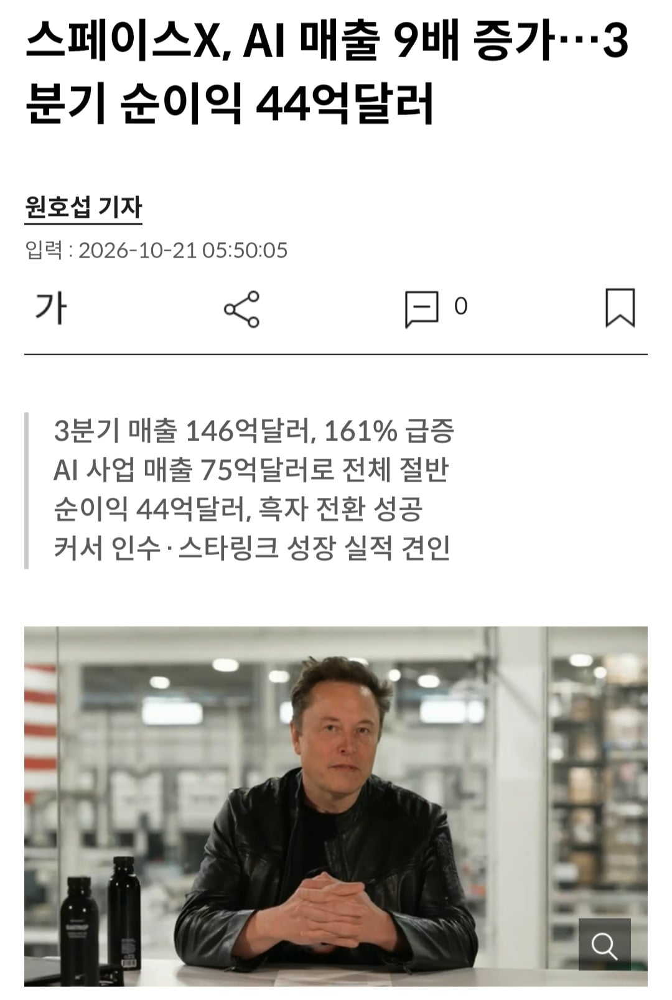

데센은 거짓말하지 않는다
데센 짓느라 무리하게
돈뜰어다쓴놈들이
거짓말하는 것이다

데센은 거짓말하지 않는다
데센 짓느라 무리하게
돈뜰어다쓴놈들이
거짓말하는 것이다
엥 그록이 돈이 됨?
영상쪽에서nsfw는 원탑임. 폰헙 학습해서 ㅋㅋㅋ
존나 꾸준히 사용량 개떡너프시키고 검열 존내넣어서 검열당하면 사용량 사라지는 식으로 운영해서 딸숭이들 돈 쪽 빨아먹은 듯.
아 난 또 x에서 땡겨온줄
아님 그록은 한줌이던데
매출은 커졌는데 실제 영업이익 상당수는 스타링크에서 온듯
아 저 ai쪽 매출이 데센 합친거구나
저건 데이터센터 구글, 엔스로픽에 임대해서 받는 금액. 그록 매출이 아님
스타링크로 버는 돈보다 데센임대로 버는 돈이 높아서 데센 수익이 스x 주수입원
아마 그록외에 다른 Ai들에게 인프라 대여해주고 돈받을걸
뽑아보면 그록이 결과물은 좋음 nsfw 만 조금 풀어주면 좋겠는데 그럴 일은 없겠지
진짜 창작물에서 나오는 미치광이 빌런 같음. 하는 행실은 또라이고 그 행실 때문에 능력을 의심받지만 결과로 증명하는 케릭터.
머스크 그림 그리는 줄 알았네
우주데이터센타 주식 살아나나요...?
지금 데이터센터는 일단 지으면 쏟아부은 자금 금방 회수해주는 노다지임.
반대로 얘기하면 짓는데 필요한 돈에 금리를 존나 높게 불러도 일단 따갚되가 되니까 금리 높게 부르는게 상관없다고 개인적으론 해석하고 있음.
근데 결국은 승자독식일거고 애매한 애들이 나가리 될때 걔들이 일단 빌려놓은 채권들이 휴지 조각이 되면 그걸 시장이 감당가능하냐는거지. 그 리스크 비용으로 금리가 계속 상승하는거고
그 과정에서 충격이 없을 순 없는데,
단순히 개별 업체의 부실 이슈로 도산이 발생한 상황에서
AI 데센에 대한 수요가 여전히 견조하다면
부실한 애들을 큰 애들이 M&A하면서 충분히 회복할만하다고 생각함
데이터센터로 돈벌고잇긴한데 그거보다 더 많은돈 데센에 다시 투자하고잇음
AI사업 매출은 28년까지 또다시 2배 이상 성장 예정
데센이 뇌 그 자체임 ㅋㅋㅋㅋ 뇌가 있어야 돈을 벌지 무에서 유를 창조할 순 없음
역시 정상화는 테평 ㅋㅋ